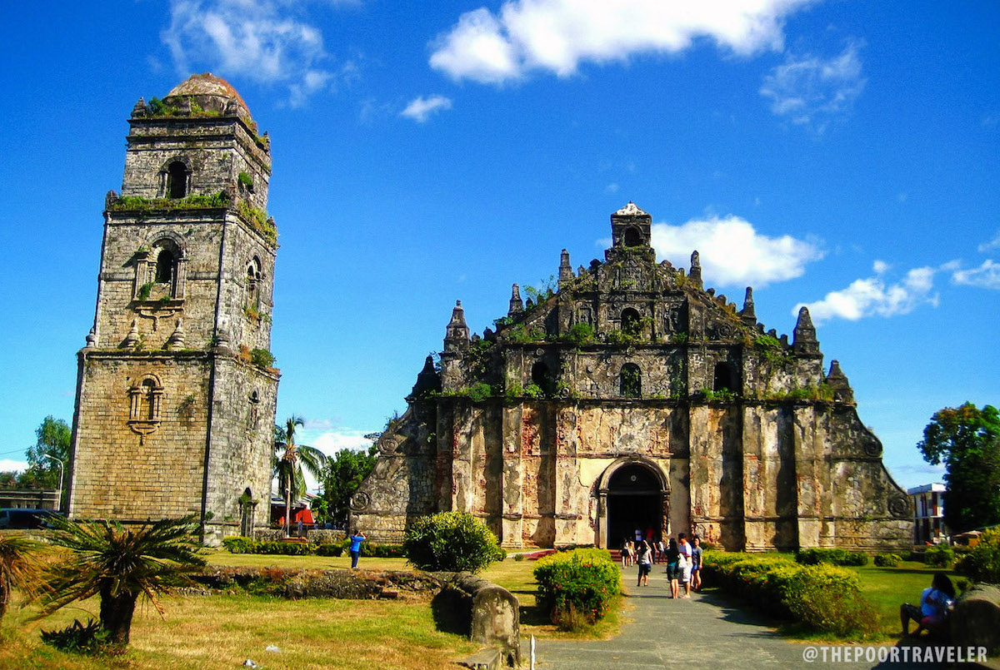

|  | The Saint Augustine Church (Spanish: Iglesia de San Agustín de Paoay), commonly known as the Paoay Church, is a Roman Catholic church in the Municipality of Paoay, Ilococs Norte in the Philippines.Completed in 1710, the church is famous for its distinct architecture highlighted by the enormous buttresses on the sides and back of the building. It is declared as a National Cultural Treasure by the Philippine government in 1973 and a UNESCO World Heritage Site under the collective group of Baroque Churches of the Philippines in 1993. |